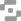

Work.
Intentional design that starts human and moves outward. Always learning and improving.
-

- EIDO Labs
- PillsTrade
-

-

-


Overview
Built product and visual explorations for Tike Social, an onchain social product
focused on creator profiles, feeds, and lightweight community surfaces.